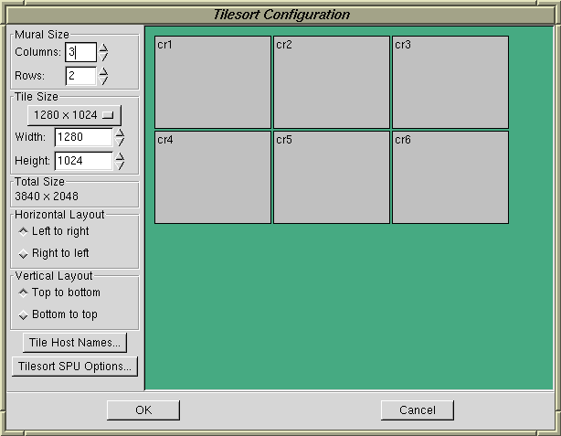

When you create tilesort template you'll be prompted to enter the number of application nodes (usually 1) and the mural size in rows and columns. When you click on OK the tilesort configuration will be created.
Clicking on the Edit Template button will open the tilesort editor, shown here:

The editor is mostly self-explanatory.
The overall mural size is a function of the number of tiles (screens) and the size of the tiles. When the number of rows, columns or tile size changes the total size is recomputed and displayed.
By default, the rendering node hosts are numbered from from left to right, top to bottom. The Horizontal Layout and Vertical Layout controls can be used to set right-to-left and bottom-to-top if desired.
The names for the rendering node hosts can be set with the Tile Host Names button.
Options for the tilesort SPU can be set with the Tilesort SPU Options button.
When you save your tilesort configuration to a file (such as
mytilesortconfig.conf) you'll have a stand-alone
configuration script that you can run as follows:
python mytilesortconfig.conf
This configuration script will also accept the following optional command-line arguments:
-c cols specifies the number of tile columns
-r rows specifies the number of tile rows
-w width specifies the tile width in pixels
-h height specifies the tile height in pixels
-s servers a comma-separated list of hosts for
the tile servers
You can also specify the name of the program to run as the last argument.
For example:
python mytilesortconfig.conf -c 2 -r 2 -s "cr1,cr2,cr3,cr4" atlantis
Will run atlantis on a 2 column by 2 row mural using the servers cr1, cr2, cr3 and cr4.